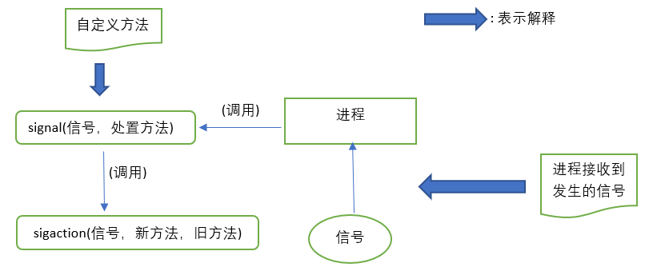
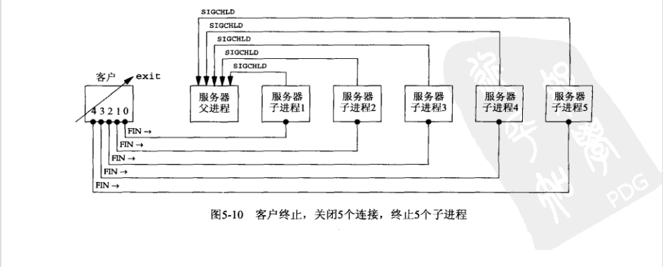

echo服务器
服务器代码
服务器开启后，处于LISTEN状态，阻塞在accept调用。（可以使用netstat查看状态）
fork一个进程后，服务器主进程又阻塞在ACCEPT进程。而派生的子进程阻塞在read调用，等待客户端发送数据过来。
1 2 3 4 5 6 7 8 9 10 11 12 13 14 15 16 17 18 19 20 21 22 23 24 25 26 27 28 29 30 31 32 33 34 35 36 37 38 39 #include "unp.h" void str_echo (int sockfd) ssize_t n;char buf[MAXLINE];while ( (n = read (sockfd, buf, MAXLINE)) > 0 ){ Fputs (buf,stdout); Writen (sockfd, buf, n);if (n < 0 && errno == EINTR)goto again;else if (n < 0 )err_sys ("str_echo:read error" );int main (int argc, char **argv) int listenfd, connfd;pid_t childpid;socklen_t clilen;struct sockaddr_in cliaddr, servaddr;Socket (AF_INET, SOCK_STREAM, 0 );bzero (&servaddr, sizeof (servaddr));htons (INADDR_ANY);htons (SERV_PORT);Bind (listenfd, (SA *)&servaddr, sizeof (servaddr));Listen (listenfd, LISTENQ);for (; ; ){sizeof (cliaddr);Accept (listenfd, (SA *)&cliaddr, &clilen);if ( (childpid = Fork ()) == 0 ){Close (listenfd);str_echo (connfd);exit (0 );Close (connfd);
客户端代码
1 2 3 4 5 6 7 8 9 10 11 12 13 14 15 16 17 18 19 20 21 22 23 24 25 26 #include "unp.h" void str_cli (FILE *fp, int sockfd) char sendline[MAXLINE], recvline[MAXLINE];while (Fgets (sendline, MAXLINE, fp)!=NULL ){Writen (sockfd, sendline, strlen (sendline));if (Readline (sockfd, recvline, MAXLINE) == 0 )err_quit ("str_cli:server terminated prematurely" );Fputs (recvline, stdout);int main (int argc, char **argv) int sockfd;struct sockaddr_in servaddr;if (argc != 2 )err_quit ("usage: tcpcli <IPaddress>" );Socket (AF_INET, SOCK_STREAM, 0 );bzero (&servaddr, sizeof (servaddr));htons (SERV_PORT);Inet_pton (AF_INET, argv[1 ], &servaddr.sin_addr);Connect (sockfd, (SA*)&servaddr, sizeof (servaddr));str_cli (stdin,sockfd);exit (0 );
查看socket状态
启动服务器时的状态：
1 2 3 4 5 6 wuhlan3@ubuntu:~/Desktop/unpv13e-master/my_test$ ./server &
可以看到，有一个套接字处于LISTEN状态，它有通配的本地IP地址，本地端口为9877。netstat中的“*”表示一个为0的IP地址（INADDR_ANY）或为0的端口号。
所以上面的也可以写成：
启动客户端后的状态：
1 2 3 4 5 6 wuhlan3@ubuntu:~/Desktop/unpv13e-master/my_test$ netstat -a
可以看到，建立了连接进入ESTABLISHED状态。
关闭客户端的状态：
1 2 3 4 5 6 wuhlan3@ubuntu:~/Desktop/unpv13e-master/my_test$ netstat -a & grep 9877
这个时候服务子进程处于TIME_WAIT状态。父进程处于LISTEN状态。
1 2 3 4 5 wuhlan3@ubuntu:~/Desktop/unpv13e-master/my_test$ sudo ps -t pts/1 -o pid,ppid,tty,stat,args,wchan
使用ps命令可以看到，子进程的状态为“Z”，即僵死状态。这是因为子进程终止的时候，发送了一个SIGCHLD信号给父进程，但是这个信号是默认忽略的，所以父进程并没有处理掉子进程。这可能会导致子进程过多占用较多内存。
关于如何用命令杀死进程
1 2 3 4 5 6 7 8 wuhlan3@ubuntu:~/Desktop/unpv13e-master/my_test$ ./server &# 用于显示所有正在运行的进程 # 按照优先级显示所有正在运行的进程 # 杀死pid为8181的进程
POSIX信号处理
信号 （signal）就是告知某个进程发生了某个事件的通知；信号通常是异步 发生的，也就是说接受信号的进程不知道信号的准确发生时刻；信号可以由（1）一个进程发给另一个进程；（2）内核发给某个进程
每个信号都有一个与之关联的处置 ，即收到特定信号时的处理方法；可以通过调用sigaction 函数来设定一个信号的处置：

img
（POSIX明确规定了调用sigaction时的语义定义，因此我们自定义signal并调用sigaction，以所期望的POSIX语义提供一个简单的接口）
处置 方法有三种：
（1）提供一个函数，只要有特定信号发生它就被调用，这样的函数称为信号处理函数 ，这种行为称为捕获信号；有两个信号SIGKILL和SIGSTOP不能被捕获；信号处理函数由信号值这个单一的整数参数 来调用，且没有返回值 ，其函数原型如下：
1 void handler (int signo)
（2）可以把某个信号的处置方法设定为SIG_IGN来忽略它；SIDKILL和SIDSTOP这两个信号不能被忽略；
（3）可以把某个信号的处置方法设定为SIG_DEF来启用它的默认处置；有个别信号的默认处置为忽略，如SIGCHLD和SIGURG
在unp.h中实现的signal函数：
1 2 3 4 5 6 7 8 9 10 11 12 13 14 15 16 17 18 #include <signal.h> typedef void Sigfunc (int ) Sigfunc *signal (int signo, Sigfunc *func) {struct sigaction act, oact;sigemptyset (&act.sa_mask); 0 ;if (signo != SIGALRM) { if (sigaction (signo, &act, &oact) < 0 ) {return SIG_ERR;return (oact.sa_handler);
解决问题一
在listen调用的后面添加：
1 Signal (SIGCHLD, sig_chld);
添加sig_chld函数：
1 2 3 4 5 6 7 void sig_chld (int signo) pid_t pid;int stat;wait (&stat);printf ("child %d terminated\n" ,pid);return ;
经检验，没有子进程处于僵死 状态了！
解决问题二
假设同一个客户端进程和服务器进程建立多个连接。且同时终止这多个连接：

image-20210803134155543
此时，建立的一个信号处理函数并在其中调用的wait不足以防止僵死进程的出现。原因：5个信号都在信号处理函数执行之前产生，而信号处理函数只执行了一次，因为Unix信号一般是不排队的
所以我们将wait替换成waitpid：
1 2 3 4 5 6 7 8 9 10 11 #include "unp.h" void sig_chld (int signo) pid_t pid;int stat;while ( (pid = waitpid (-1 ,&stat, WNOHANG)) > 0 )printf ("child %d terminated\n" , pid);return ;
wait会令调用者阻塞直至某个进程终止
waitpid则可以通过设置一个选项来设置为非阻塞。而且等待的时参数中的pid指定的进程。当然也可以设为-1
改进版的echo服务器解决了网络编程时可能遇到的三种情况：
当fork子进程时，必须捕获SIGCHLD信号；
当捕获信号时，必须处理被中断的系统调用
SIGCHLD的信号处理函数必须正确编写，应使用waitpid函数以免留下僵死进程
解决问题三
假设开启服务器与客户端之后，使用kill命令杀死服务器的子进程，会出现如下过程：
kill执行后，服务器子进程的所有描述符 都将关闭，并发送一个FIN给客户端。客户端会返回一个ACK给服务器。这是四次握手关闭连接的前半部分。
SIGCHLD信号 会发送给服务器主进程，对僵死状态的子进程进行正确处理。
但是，客户端这个时候阻塞在fgets函数上。
使用netstat查看，此时关闭连接已经完成一半。
客户端再写下一个文本，由于服务器的连接套接字已经关闭了，所以它会发送一个RST。（注意，是要键入文本之后，才会进行读入描述符，进行下一步操作）。
由于客户端阻塞在fgets上，发现不了RST。由于接收终止符EOF，所以客户端会提示"str_cli:server terminated prematurely"服务器过早终止的报错
1 2 if (Readline (sockfd, recvline, MAXLINE) == 0 )err_quit ("str_cli:server terminated prematurely" );
服务器终端：
1 2 3 4 5 6 7 8 9 10 11 12 13 14 15 16 17 18 19 20 21 22 23 wuhlan3@ubuntu:~/Desktop/unpv13e-master/my_test$ ./server &
客户端的终端：
1 2 3 4 5 wuhlan3@ubuntu:~/Desktop/unpv13e-master/my_test$ ./client 127.0.0.1
归根结底，这里的问题在于FIN到达客户端套接字的时候，客户端正阻塞在fgets上，不能够及时处理。客户端实际上在应对两个操作符——套接字和用户输入。它不应该单纯地阻塞一个特定源的输入上，而应该同时阻塞在这任意源的输入上。所以这就引入了两个函数select
和 poll。在UNIX网络编程（六）
解决问题四
假设服务器和客户端正常启动。
主机崩溃后（不是操作员执行关机），已有的网络连接不再发出任何东西。
此时客户端写入一行文字，使用writen写入内核，再由客户TCP作为一个分节发出。之后客户端阻塞在readline，等待服务器的echo回射。
使用tcpdump就会发现，TCP在持续重传数据分节，试图从服务器上收到一个ACK。
是由readline返回错误的：
如果服务器没有对分节做出响应，则报错ETIMEDOUT ；
如果中间路由器知道服务器不可达，则路由器会返回“destination
unreachable”目的地不可达，报错为EHOSTUNREACH 或ENETUNREACH
该问题在于，我们想要知道主机是否崩溃，只能通过客户端多次重传分节的方式来检验。想要解决这个问题，可以看UNIX网络编程（七） SO_KEEPALIVE 套接字选项
服务器关机后的重启
假设服务器和客户端正常启动。
主机崩溃后，立即重启
客户端此时发送一行文本给服务器
由于服务器丢失了所有的连接信息，所以服务器会返回一个RST给客户端
客户端此时阻塞在readline上，收到RST后，返回ECONNECTRST报错。
如果想要客户端不发送数据也要知道服务器是否发生崩溃，则可以采用UNIX网络编程（七） SO_KEEPALIVE 套接字选项或客户/服务器心搏函数。
服务器主机关机
这里考虑的是服务器操作员手动关机 会发生什么。
Unix系统关机时，init进程会给所有进程发送一个SIGTERM信号（可被捕获），等待一段5~20秒的时间后，给仍在运行的程序发送给一个SIGKILL（不可被捕获）。这样做，留出的一小段时间是给运行进程自己来清除与终止的。如果没有捕获SIGTERM信号来终止，最后就会被SIGKILL终止。
当服务器子进程终止时，它的所有描述符都关闭，接着就回到问题三 啦！
解决问题五
交换数值数据的时候可能会引发一些问题。
问题：
大端序与小端序。服务器与客户端使用不同的方式来存储二进制数
32位系统和64位系统中的short、int、long，它们的大小不能保证
不同实现对结构打包的方式存在差异。
解决办法：
使用文本来传输
显式定义：大端序小端序、位数。这种方式常常用于RPC远程过程调用 中。
小结
我们首先实现了一个简陋的echo服务器，在其中发现很多问题
问题一：僵死子进程
问题二：Unix信号不排队
问题三：服务器进程终止时，客户进程没有被告知
问题四：服务器主机崩溃时，要等到客户向服务器发送数据才能检测出来
问题五：交换文本行时问题不大，但若是交换数值数据将引发一组新的问题。
以上是这一部分需要解决的问题！
参考资料
[1] https://www.cnblogs.com/soldierback/p/10690783.html
[2] https://www.cnblogs.com/yusenwu/category/701521.html
[3] 《UNIX网络编程 卷1 套接字联网API》